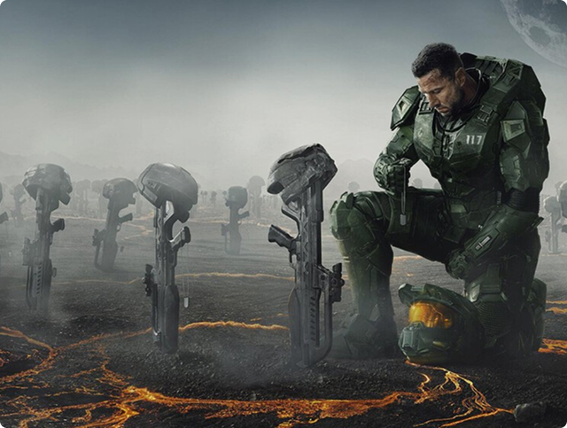
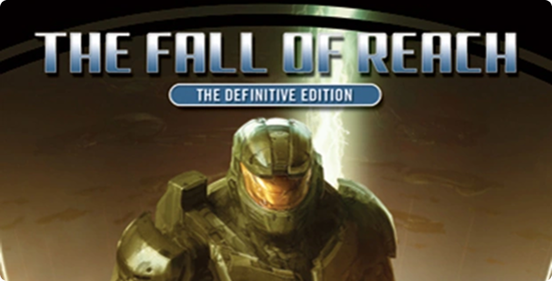
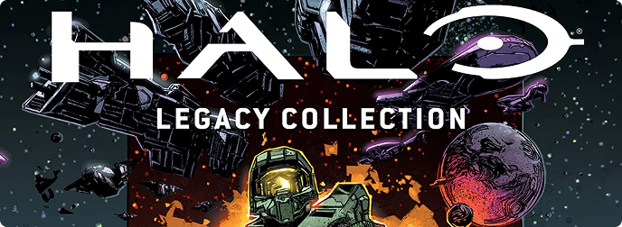
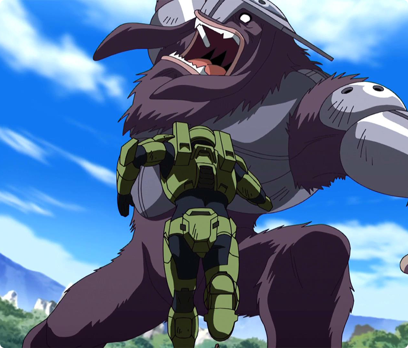

Importancia en la industria
Descubre cómo Halo marcó una época y dejó su huella en la industria de los videojuegos.
Ver

Con el tiempo, la franquicia creció más allá de la consola. En los videojuegos, además de la serie principal (Halo 2, Halo 3, Halo 4, Halo 5: Guardians y Halo Infinite), existen spin-offs como Halo: ODST, Halo: Reach y Halo Wars, este último de estrategia en tiempo real. En la literatura, novelas como The Fall of Reach o Contact Harvest expandieron el trasfondo de personajes y conflictos. También hay cómics y novelas gráficas, además de producciones audiovisuales como las animaciones Halo Legends y la serie live-action Halo (2022) de Paramount+, sin olvidar la banda sonora, muy reconocida por su tema principal.
Con el tiempo, Halo dejó de ser solo una saga de videojuegos y se convirtió en un universo narrativo con muchas capas, lo que permite explorar su historia desde distintos ángulos.


La literatura fue una de las primeras vías de expansión. The Fall of Reach, de Eric Nylund, muestra cómo los Spartans fueron creados y narra la guerra contra los Covenant antes de los eventos de los juegos. Otras novelas, como The Flood, Ghosts of Onyx o Contact Harvest, amplían el conflicto con los Covenant y con el Flood, y dan más profundidad a personajes secundarios y a facciones como la UNSC. Algunas de estas obras se centran en historias menos conocidas del universo, como la vida en los mundos coloniales o las operaciones encubiertas de los Spartans, lo que aporta una visión más política y humana del conflicto.
Los cómics han servido para explorar episodios más breves o paralelos a la trama principal. Series como Halo: Uprising o Halo: Escalation profundizan en personajes y situaciones específicas, y muchas historias gráficas presentan la lucha entre la humanidad y los Covenant desde la perspectiva de soldados comunes, pilotos o civiles. Son una buena puerta de entrada para quienes no quieren leer novelas extensas.


Halo Legends (2010) es una antología de cortometrajes animados producidos por distintos estudios japoneses. Cada episodio es independiente, pero todos se ubican dentro del universo de Halo y exploran personajes, épocas y tonos diferentes, desde historias de combate hasta relatos más reflexivos. Su valor principal está en mostrar cómo distintos creadores interpretan la misma franquicia con estilos visuales muy variados.
Halo (2022), estrenada en Paramount+, adapta la historia del Jefe Maestro y de Cortana con un enfoque más personal y humano. La serie introduce cambios respecto a los juegos, reinterpreta algunos personajes y relaciones, y se centra en los dilemas morales de sus protagonistas. Generó opiniones divididas: algunos valoraron su intento de dar profundidad emocional, mientras que otros criticaron las diferencias con el material original.
Descubre cómo Halo marcó una época y dejó su huella en la industria de los videojuegos.
Ver
El contenido protegido por derechos de autor que pueda aparecer en este sitio, como imágenes, capturas de pantalla, ilustraciones, logotipos, fragmentos audiovisuales o referencias, se utiliza únicamente como material de apoyo, comentario, análisis, crítica, documentación o demostración de los temas tratados. La inclusión de estos materiales no pretende reclamar su propiedad ni transferir ningún derecho sobre ellos.